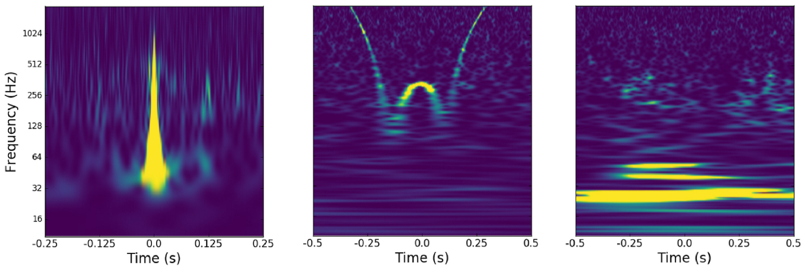
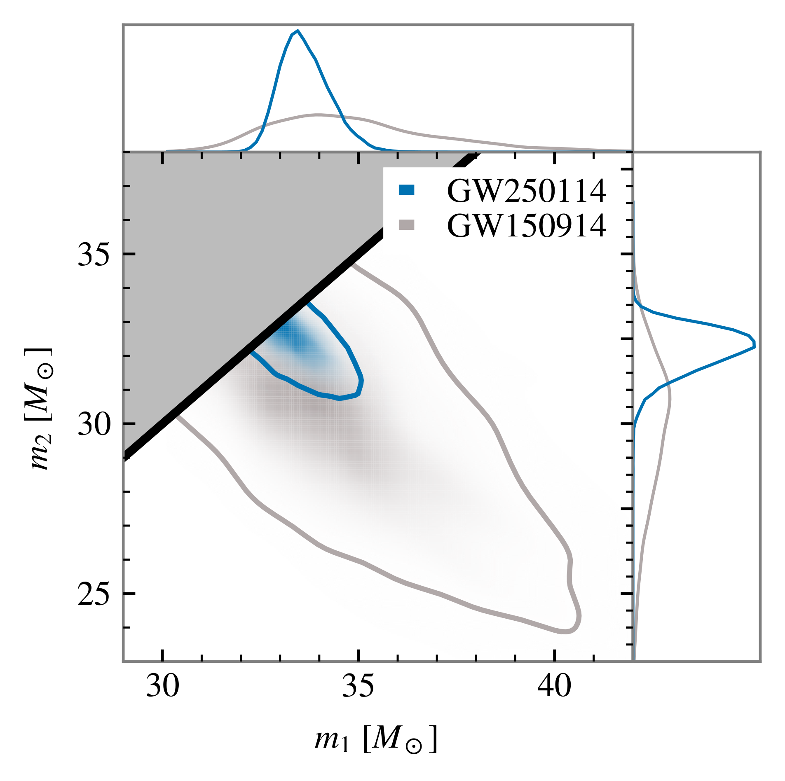
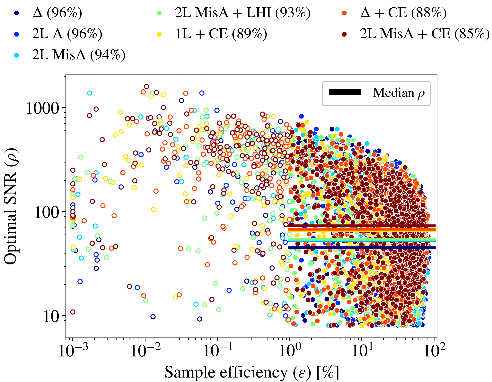

Simulation-based inference
in gravitational wave data analysis
2026-04-24
The gravitational wave inference problem
What kind of data do we have?

Strain data for the GW250114 event (Abac et al. 2025).
Strain data
\[ d_i = n(i \Delta t) + h(i \Delta t; \theta, M) \]
where typically \(1/\Delta t = 4096 \text{Hz}\) or \(16384 \text{Hz}\).
The contributions are:
- instrumental noise \(n(t)\);
- gravitational wave signal \(h(t; \theta, M)\), which we obtain based on a model \(M\) with parameters \(\theta\).
Stationary Gaussian noise model
Typical assumptions about the noise:
- \(\mathbb{E}[n(t)] = 0\),
- \(\mathbb{E}[n(t) n(t + \Delta t)] = \gamma (\Delta t)\),
- \(\lbrace n(t_1), \dots, n(t_N) \rbrace\) is an \(N\)-dimensional Gaussian random variable for any choice of times \(t_1 \dots t_N\).
Glitches

Examples of glitches in gravitational wave data (Powell 2018).
Gravitational wave likelihood
In full generality:
\[ \mathcal{L}(d | \theta, M) = p(\text{noise realization } n = d - h(\theta, M) | \theta, M) \]
With Gaussian stationary noise:
\[ \mathcal{L}(d | \theta, M) \propto \exp\left( - \frac{1}{2} \int_{f_\text{min}}^{f_\text{max}} \frac{|\tilde{d}(f) - \tilde{h}(f; \theta, M)|^2}{S_n(f)} \text{d} f \right) \]
Bayesian inference
\[ \underbrace{\mathcal{L}(d | \theta, M) \pi (\theta | M)}_{\text{assumptions}} = \underbrace{p(\theta | d, M) \mathcal{Z}(d | M)}_{\text{result}} \]

Figure 1: Posterior distribution on the component masses of GW250114. Adapted from Abac et al. (2025).
Model parameters
The signal parameters \(\theta\) include:
- where is the source in the sky? how is it oriented?
- what masses do the two objects have?
- how fast are they rotating, and in which direction?
- …
Depending on the model, there can be 10–17 parameters.
Simulation-based inference
Simulating from the likelihood
In standard inference, we evaluate the likelihood \(\mathcal{L}(d | \theta, M)\).
In simulation-based inference, we simulate data distributed according to the likelihood:
\[ d \sim \mathcal{L} ( d | \theta, M) \]
Flavors of SBI
- Neural posterior estimation: a density estimator \(q(\theta | d)\) models the posterior \(p(\theta | d)\);
- Neural likelihood estimation: a density estimator \(q(d | \theta)\) models the likelihood (requires sampling);
- Neural ratio estimation: a classifier \(r(\theta, d)\) models the likelihood-to-evidence ratio \(\mathcal{L}(d|\theta) / \mathcal{Z}(d)\) (requires sampling).
- …
More details: Liang & Wang (2025).
Neural posterior estimation in a nutshell
Take a density estimator \(q_\phi (\theta | d)\) with parameters \(\phi\). Train it with a loss function in the form (Dax et al. 2021, Papamakarios & Murray 2016)
\[ L(\phi) = \mathbb{E}_{\theta \sim \pi(\theta)} \mathbb{E}_{d \sim p(d|\theta)} [-\log q_\phi(\theta|d)]\,. \]
If training is successful, the estimator \(q_{\bar{\phi}}(\theta | d)\) at \(\bar{\phi} = \text{argmin}_\phi L(\phi)\) will approximate \(p(\theta | d)\).
Proof
Consider the posterior expectation of the KL divergence from posterior \(p\) to the estimator \(q\):
\[ D_{\text{KL}}( p || q_\phi) = \int p(\theta | d) \left[ \log p(\theta | d) - \log q_\phi (\theta | d) \right] \text{d}\theta \]
Averaging over all realizations of the data \(d\):1
\[ \mathbb{E}_{d \sim \mathcal{Z}(d)} [D_{\text{KL}}( p || q_\phi)] \overset{c}{=} \int p(\theta | d) \mathcal{Z}(d) \left[ - \log q_\phi (\theta | d) \right] \text{d}\theta \text{d}d \]
Proof
By Bayes’ theorem, \(p(\theta | d) \mathcal{Z}(d) = \mathcal{L}(d | \theta ) \pi(\theta)\).
We can compute the expectation value by
- sampling \(\theta\) from the prior \(\pi (\theta)\),
- simulating the data \(d\) from the likelihood \(\mathcal{L}(d | \theta )\).
Normalizing flows
An invertible, differentiable map \(T\) from a simple probability distribution \(p(u)\) to an arbitrary one, \(q (\theta)\).
Normalizing flows
To obtain samples from \(q\):
- sample \(u\) from \(p(u)\);
- compute \(\theta = T(u)\);
- bonus: we can compute the density function as
\[ q(\theta) = p (T^{-1}(\theta)) |\det J_{T^{-1}}(\theta)| \]
Toy model: nested sampling versus neural posterior estimation
Problem setup
The example is borrowed from the LAMPE documentation.
Suppose we have a model with three parameters: \(\theta \sim \pi(\theta) = \mathcal{U}([-1, 1]^3)\).
Our data is one observation of
\[ x = \begin{pmatrix} \theta_1 + \theta_2 \theta_3 \\ \theta_1 \theta_2 + \theta_3 \end{pmatrix} + \varepsilon \]
where \(\varepsilon \sim \mathcal{N}^2(\mu = 0; \sigma = 0.05)\).
Standard approach: Nested Sampling
We can then sample with DYNESTY.

New approach: NPE
estimator = NPE(*args, **kwargs)
loss = NPELoss(estimator)
loader = JointLoader(prior, simulator)
optimizer = optim.Adam(
estimator.parameters())
step = GDStep(optimizer)
for epoch in range(64):
losses = []
for theta, x in islice(loader, 256):
losses.append(
step(loss(theta, x)))
samples = (estimator.flow(x_obs)
.sample((2**16,))
)
Validating the NPE results
def effective_samples(samples):
log_like_times_prior = [
loglike(sample) + log_prior(sample)
for sample in samples
]
ln_weights = log_like_times_prior - flow_density.detach().numpy()
weights = np.exp(ln_weights - np.max(ln_weights))
n_eff = weights.sum()**2 / (weights**2).sum()
return weights, n_eff
sbi_samples = samples.detach().numpy()
weights, n_eff = effective_samples(sbi_samples)We have 65536 samples but only 45874 effective samples.
Weighted posterior


Weighted samples comparison


Back to gravitational waves
Sample efficiency

Sample efficiency as a function of SNR (Santoliquido et al. 2025).